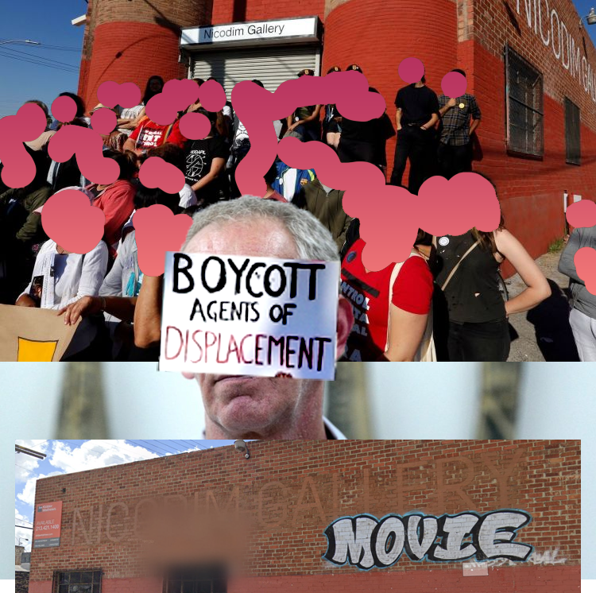

Nicodim
Gallerist: Mihai Nicodim
Owner: 571 SOUTH ANDERSON LLC c/o YI HSING CHANG <
Nicodim is one of those galleries seeking to capitalize on Boyle Heights proximity to the hip and trendy Arts District while claiming the edginess and street cred of a poor, “undiscovered” neighborhood. Owner Mihai Nicodim has relied on his rags-to-riches story, claiming “I was poor once, too” in order to paint an image of himself as a hard-working immigrant who is just trying to sell art to survive. In reality, Nicodim is a high-profile art dealer whose 10,000 sq. ft. gallery represents 19 international artists, yielding major profits.

The neighborhood’s frustration reached a boiling point when someone tagged “FUCK WHITE ART” on the gallery’s doors. Nicodim called the police immediately, bringing the threat of state violence to a community already under constant surveillance. The police threatened to launch an FBI hate crime investigation against the hood—weaponizing a law supposedly designed to protect vulnerable communities.

In protest of the criminalization of Boyle Heights youth and activists, organizations including Defend Boyle Heights, the women of Pico Aliso, BHAAAD, and the Stop LAPD Spying Coalition held a press conference outside Nicodim on November 5, 2016. White accomplices in the movement spoke about the statement inherent in “FUCK WHITE ART,” recognizing that gentrification is a manifestation of white supremacy. The community demanded that gentrifiers like Nicodim leave Boyle Heights.
During the press conference,
Cristina Nicodim intentionally drove her motorcycle into the crowd. People moved out of her way just in time to avoid being injured, but were shocked by
this act of brutality that could have seriously injured elderly residents and other community members. Her
complete lack of regard for our demands and our safety inspired us to use our anger to push her as much as
possible to leave the neighborhood.